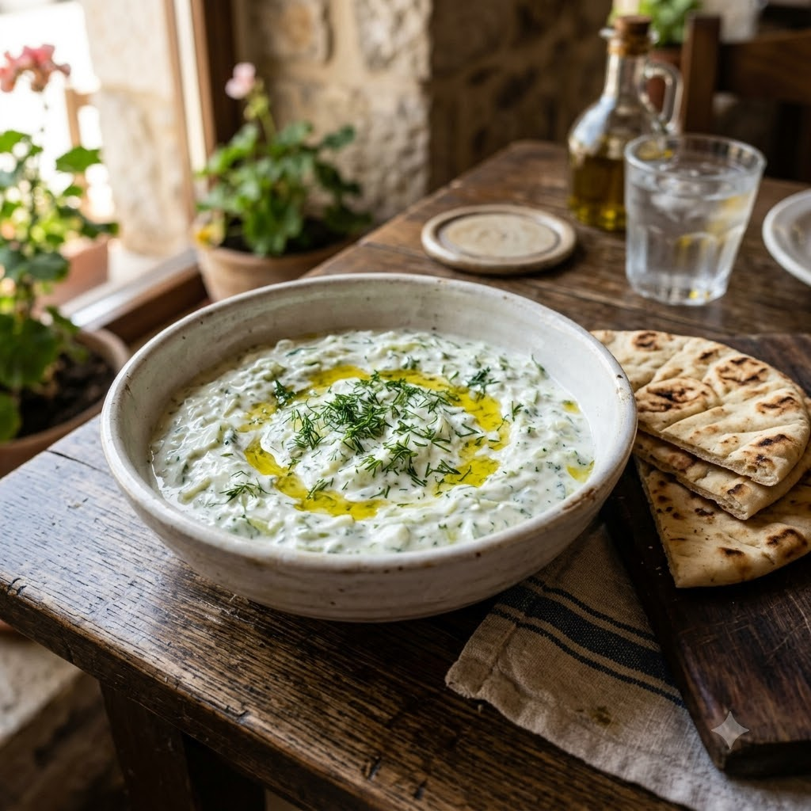

Tzatziki

Tzatziki
No-Cook — 8 min — Serves 4
Gluten-Free • Vegetarian • No-Cook • Mediterranean • Gut-Friendly • Probiotic
Prep ahead: Squeeze the grated cucumber well to remove excess water, or the dip will turn watery.
Ingredients
- 1 cup thick yogurt
- 1/2 cucumber, grated and squeezed dry
- 1 clove garlic, minced
- 1 tbsp olive oil
- 1 tsp lemon juice
- 1 tsp chopped dill or mint
- Salt to taste
Method
1Mix yogurt, squeezed grated cucumber, garlic, olive oil, lemon juice, dill and salt.
2Chill for at least 30 minutes before serving for the flavours to meld.